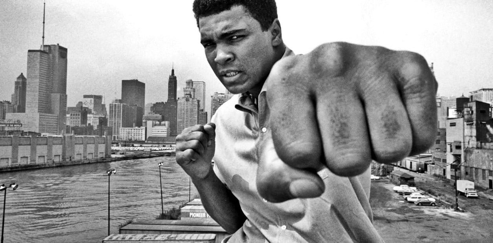
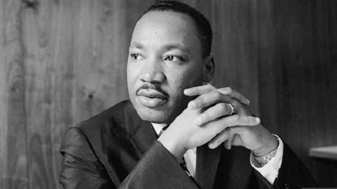
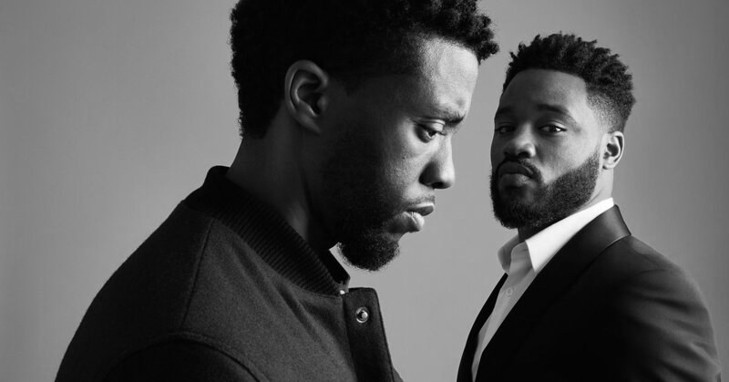
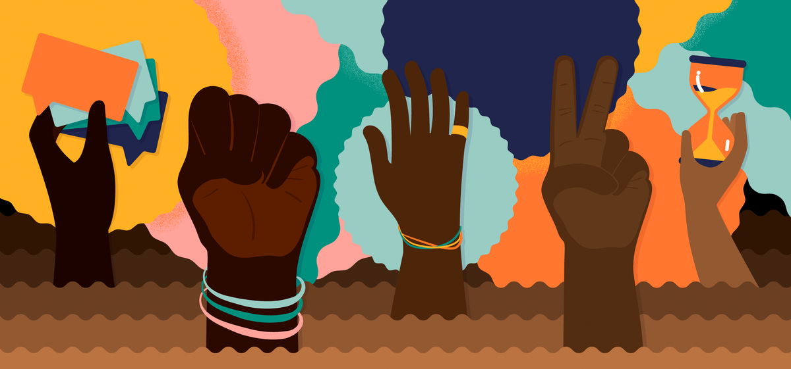

No mês de novembro, celebramos a Consciência Negra, sendo o dia 20 de novembro uma data para relembrar as lutas dos movimentos negros pelo fim da opressão provocada pela escravidão. Essa data refere-se à morte de Zumbi, importante líder do Quilombo dos Palmares, situado no Nordeste do Brasil. O Dia da Consciência Negra também não nos deixa esquecer de que este país é marcado pelos quase 350 anos de duração da escravidão e do tráfico das populações negras da África para o Brasil.
Apesar dos 134 anos da lei que deu fim à escravidão, o racismo continua presente nas estruturas sociais e institucionais deste país e é manifestado pela falta de oportunidades para pessoas negras, por baixa remuneração, pelas tentativas de apagamento da cultura e da participação africana na construção da nação brasileira e pelo epistemicídio acadêmico de negros e negras, entre outras formas de apagamento e de violência.
Ainda temos um longo caminho a trilhar, e a Ufes está engajada na luta pelo fim do racismo. É importante destacar algumas conquistas das comunidades negras, especialmente no que concerne às ações afirmativas que têm sido implementadas. A começar pela Constituição brasileira, de 1988, de cuja construção vários atores da sociedade, incluindo os movimentos negros, participaram ativamente, que traz medidas importantes para a promoção de reparações à comunidade negra.
Dentre essas, destacamos a lei que definiu os crimes de preconceito de raça ou cor (nº 7.716, de 5 de janeiro de 1989), surgida a partir dos novos princípios constitucionais, e a Lei nº 10.639, de 9 de janeiro de 2003, voltada para a educação básica, que instituiu a obrigatoriedade do ensino de história e cultura afro-brasileiras. Essas são legislações reparatórias, mas ainda precisamos avançar em ações afirmativas que contemplem maior presença negra em todos as esferas sociais.
Os resultados obtidos tanto para as universidades quanto para a sociedade permitem defender a continuidade da reserva de vagas e o aperfeiçoamento da Lei nº 12.711/2012, a fim de que seja assegurado não somente o ingresso, mas a permanência dos estudantes na universidade, para que consigam concluir sua trajetória acadêmica com qualidade. A Ufes mantém um programa de assistência estudantil que contribui para essa finalidade, e pretende poder continuar fortalecendo-o, como tem feito nos últimos anos.
Também há a preocupação de que se promova com mais ênfase a inclusão epistemológica das questões étnico-raciais. O Plano de Desenvolvimento Institucional (PDI) da Ufes, aprovado para os próximos nove anos, e o Projeto Pedagógico Institucional (PPI) da Universidade incluem importantes avanços no que diz respeito à necessidade de alterações epistêmicas nos conteúdos das disciplinas e nas políticas de ensino, pesquisa e extensão, para que contemplem as temáticas étnico-raciais.
"Eu era uma pessoa com dignidade e respeito próprio, e não deveria me considerar pior que qualquer outra pessoa só porque era negra." (Rosa Parks)
"Ninguém nasce odiando outra pessoa pela cor de sua pele, por sua origem ou ainda por sua religião. Para odiar, as pessoas precisam aprender, e se podem aprender a odiar, elas podem ser ensinadas a amar." (Nelson Mandela)
"Eu tenho um sonho que meus quatro pequenos filhos um dia viverão em uma nação onde não serão julgados pela cor da pele, mas pelo conteúdo do seu caráter." (Martin Luther King)
"É chegada a hora de tirar nossa nação das trevas da injustiça racial." (Zumbi dos Palmares)
"Eu era uma pessoa com dignidade e respeito próprio, e não deveria me considerar pior que qualquer outra pessoa só porque era negra." (Rosa Parks)
"Minha luta diária é para ser reconhecida como sujeito, impor minha existência numa sociedade que insiste em negá-la." (Djamila Ribeiro)
"Não sou descendente de escravos. Sou descendente de pessoas que foram escravizadas." (Makota Valdinha)
"Estou contra toda forma de racismo e segregação, toda forma de discriminação. Eu acredito nos seres humanos, e que todos os seres humanos devem ser respeitados como tais, independentemente da sua cor." (Malcom X)
"Odiar as pessoas por causa de sua cor é errado. E não importa qual cor é a de odiar. É simplesmente errado." (Muhammad Ali)
Tudo é mais difícil para um negro. Você tem que provar 100 vezes que você é o melhor. É cansativo, duro, doloroso. Se você não tiver uma força extraordinária, não consegue passar por isso. Mas eu vim ao mundo para lutar. Sou uma guerreira! (Glória Maria)
"Eu não estou aceitando as coisas que eu não posso mudar, estou mudando as coisas que eu não posso aceitar."
"A Consciência Negra é, em essência, a percepção pelo negro da necessidade de reunir-se com seus irmãos em torno da causa de sua opressão."
"Não lutamos por integração ou por separação. Lutamos para sermos reconhecidos como seres humanos.Malcom X"
"Eu tenho um sonho, que os negros e os brancos andassem em irmandade e sentassem-se na mesma mesa em paz.Martin Luther King"
"Eu tenho um sonho, que os negros e os brancos andassem em irmandade e sentassem-se na mesma mesa em paz.Martin Luther King"
"O negro é o protagonista na maioria das minhas pinturas. Percebi que não via muitas pinturas com negros.O negro é o protagonista na maioria das minhas pinturas. Percebi que não via muitas pinturas com negros."
"Você nunca deve ter medo do que está fazendo quando está certo.Rosa Parks"
"Minha humanidade está ligada à sua, pois só podemos ser humanos juntos.Desmond Tutu"
"Sempre é hora de fazer o que é certo.Martin Luther King Jr."
"Enquanto a cor da pele for mais importante que o brilho dos olhos, haverá guerra.Haile Selassie"
"Como negra, não quero mais ser objeto de estudo, e sim o sujeito da pesquisa.Djamila Ribeiro"
"Nunca fique limitado pela imaginação limitada de outras pessoas. Dr. Mae Jemison"
"Se o muro que me impede de avançar é o racismo, vou derrubar com minha consciência negra.Eli Odara Theodoro"
"Não sou descendente de escravos. Sou descendente de pessoas que foram escravizadas.Makota Valdinha"
"Quando a mulher negra se movimenta, toda a estrutura da sociedade se movimenta com ela.Angela Davis"
"Faço questão de botar no meu texto Que pretas e pretos estão se amandoRicon Sapiência"
"Quando chegam as visitas, Me mandam comer na cozinha. Mas eu rio E como bem, E vou ficando mais forte.Amanhã, Quando chegarem as visitas Me sentarei à mesa. Ninguém ousará, então, me dizer, “Vá comer na cozinha”. Além do mais, Eles verão quão bonito eu sou E se envergonharão –Eu, também, sou a América.Langston Hughes"
"Bons tempos, boas pessoa. Agradeco o amor."
"E acredito, acredito sim que os nossos sonhos protegidos pelos lençóis da noite ao se abrirem um a um no varal de um novo tempo escorrem as nossas lágrimas fertilizando toda a terra onde negras sementes resistem reamanhecendo esperanças em nós.Conceição Evaristo"
"Afinal Afinal compreendi Afinal Já não retrocedo Afinal E avanço segura Afinaltrolls Avanço e espero Afinal E bendigo aos céus porque quis Deus que negro azeviche fosse minha cor E já compreendi Afinal, Já tenho a chave! Negro! Negro! Negro! Negro! Negro! Negro! Negro! Negro! Negro! Negro! Negro! Negro! Negro, Negro Negra sou!Victoria Santa Cruz"
"encontrei minhas origens na cor de minha pele nos lanhos de minha alma em mim em minha gente escura em meus heróis altivos encontrei encontrei-as enfim me encontrei liveira Silveira"
